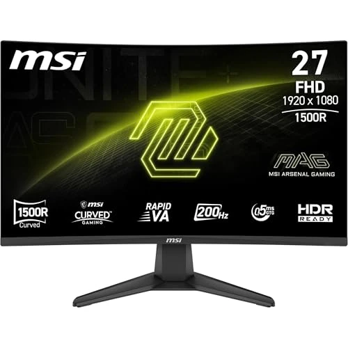
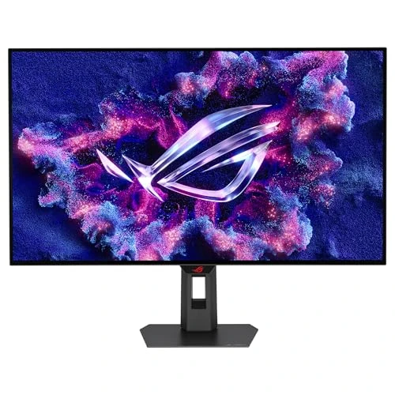
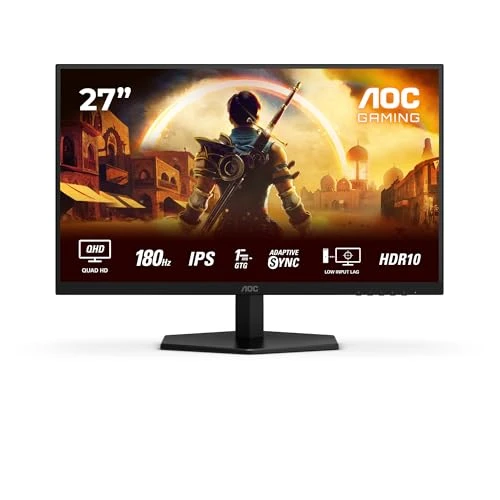
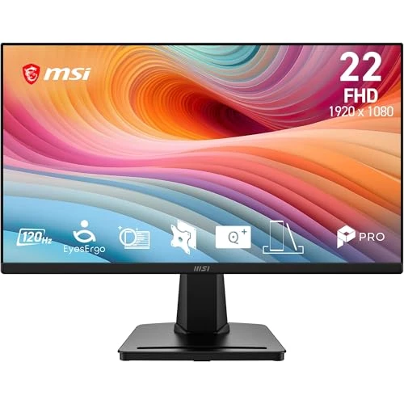
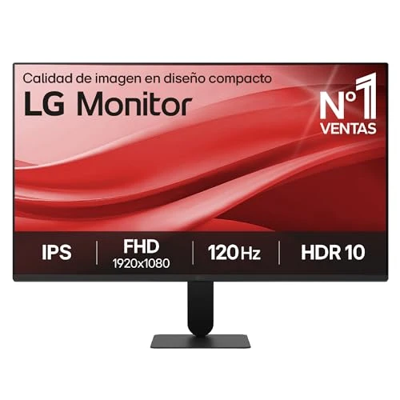

El mejor monitor gaming en 2026: cómo elegir de verdad
La mayoría de listas de "mejores monitores" ordenan solo por resolución, que es el eje equivocado para gaming. En juegos rápidos, la tasa de refresco (Hz) y el tiempo de respuesta (ms) influyen más en cómo se siente el juego que un millón de píxeles extra — y la tecnología de sincronización (FreeSync / G-Sync) decide si esa tasa de fotogramas llega sin tearing.
Qué importa realmente para gaming
Tasa de refresco: 144Hz es el mínimo práctico para títulos competitivos; 240Hz importa sobre todo cuando ya alcanzas frame rates altos en esports. Tiempo de respuesta: por debajo de 5ms GtG se evita el ghosting visible; los paneles OLED lo llevan casi a cero. Tipo de panel: el IPS da el mejor color y ángulos de visión por su precio; el VA da más contraste; el OLED da contraste y velocidad a la vez, a precio premium.
Nuestra selección

El mejor equilibrio entre resolución y tasa de refresco por su precio.

El QHD con más reseñas y trayectoria de toda la comparativa.

El más rápido de la comparativa en Hz y tiempo de respuesta entre los añadidos en esta ronda de ofertas.

El mejor precio de la comparativa para gaming rápido.

El más vendido de esta ronda: #4 en el ranking de ventas de Monitores de Amazon.es.

El más rápido en Hz (200Hz) de este lote de ofertas.

El monitor más avanzado en imagen y color de todo el catálogo — y también el más caro.

La mejor relación specs-precio en QHD con HDR de la comparativa.

El más pequeño y ligero del catálogo para espacios reducidos.

Una alternativa más en gaming con buen histórico de ventas.

Una alternativa más en gaming con buen histórico de ventas.

Una alternativa más en gaming con buen histórico de ventas.

El descuento más agresivo (40%) de esta ronda de incorporaciones.

El más documentado por sus propios compradores (352 reseñas) de este lote de ofertas.

El más vendido de la comparativa: la relación precio-popularidad más sólida.

Una alternativa más en gaming con buen histórico de ventas.

Una alternativa más en gaming con buen histórico de ventas.

El más ergonómico (altura + pivote) de las incorporaciones de esta ronda de ofertas.

La mejor relación resolución/precio de este lote: WQHD 144Hz por debajo de 130€.

El mejor valorado (4,6★) de esta ronda de incorporaciones.

El más compacto de todo el catálogo — ideal como segunda pantalla.

Una alternativa más en gaming con buen histórico de ventas.

Una alternativa más en gaming con buen histórico de ventas.

Una alternativa más en gaming con buen histórico de ventas.

La opción más pequeña y barata de la gama Philips 120Hz de esta comparativa.

El más completo en compatibilidad de sincronización (G-Sync + FreeSync) de esta ronda de incorporaciones.

El de mayor volumen de ventas comprobado de toda la comparativa.

El más completo para un uso mixto gaming + multimedia.

Una alternativa más en gaming con buen histórico de ventas.

Una alternativa más en gaming con buen histórico de ventas.

El mejor valorado (4,7★) de este lote de ofertas.

El más barato y sencillo de esta ronda de incorporaciones — vende por volumen, no por prestaciones.

La pantalla más grande y con más valoraciones de esta ronda de ofertas.

El más comprado y valorado para uso general de toda la comparativa.

Una alternativa más en gaming con buen histórico de ventas.
Cómo hemos puntuado
Cada monitor aquí se puntúa de 0 a 10 en seis ejes — nitidez, fluidez, color/HDR, ergonomía, preparación para gaming y calidad-precio — normalizados frente al resto de monitores de nuestro catálogo. Consulta el desglose completo en cómo puntuamos, o abre el comparador para comparar cualquier par lado a lado.